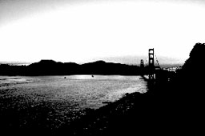

Nella parte superiore destra della finestra di LightZone, vicino a ZoneFinder, Istogramma e Campionatore, è presente anche il Visore selezione colore che mostra le aree della foto che rientrano nella selezione di luminosità/colore dello strumento selezionato.
Segue un esempio.
| (a) nessun colore selezionato | (b) blu selezionati |
|
|  |
In (a) non è stata realizzata alcuna selezione quindi nel visore è mostrata tutta la foto a pieni colori. In (b) i blu sono stati selezionati quindi le aree della foto in blu sono mostrate in bianco (selezionate) e le altre sono mostrate in nero (non selezionate).